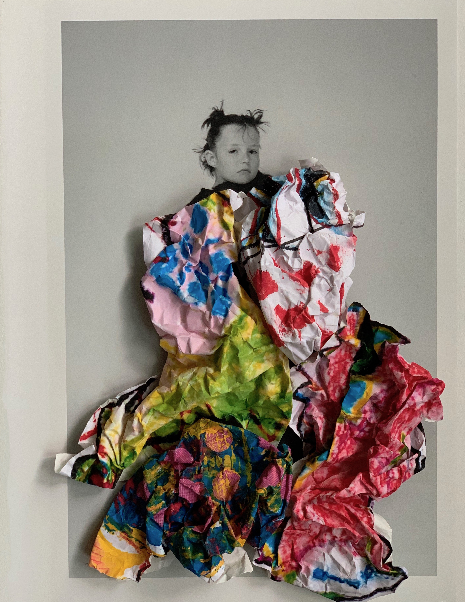

"Since the pandemic, I've been making images with everyday objects in my home. I’ve been making collages with my past magazine work and making sculptures with my work tools. I want the photographers to shoot my work as soon as possible, haha."
-Shotaro Yamaguchi is a fashion stylist based in Tokyo.
Where are you quarantined? How did you end up there?
Tokyo, in my home-and-office. I'm always working here.
Who are you quarantined with? How is it going?
With my wife.
I get up early, I jog, I eat healthy food, and I sleep well. I feel healthier than before the pandemic because I'm living a very disciplined and regular life.
What is your current state of mind?
In these days of uncertainty, I feel that I must be more kind and loving than ever before.

If you could have dinner with one person this evening, who would it be? What would you eat?
I've never thought about that. Thanks to social networking, I feel close to my friends and family.
What is your biggest pre-quarantine regret?
I have no regrets.

What do you value most in people?
Evolution, courage, and love.
What do you value most in your work?
A never-give-up mindset and ambition.
What are you looking forward to?
Everything.